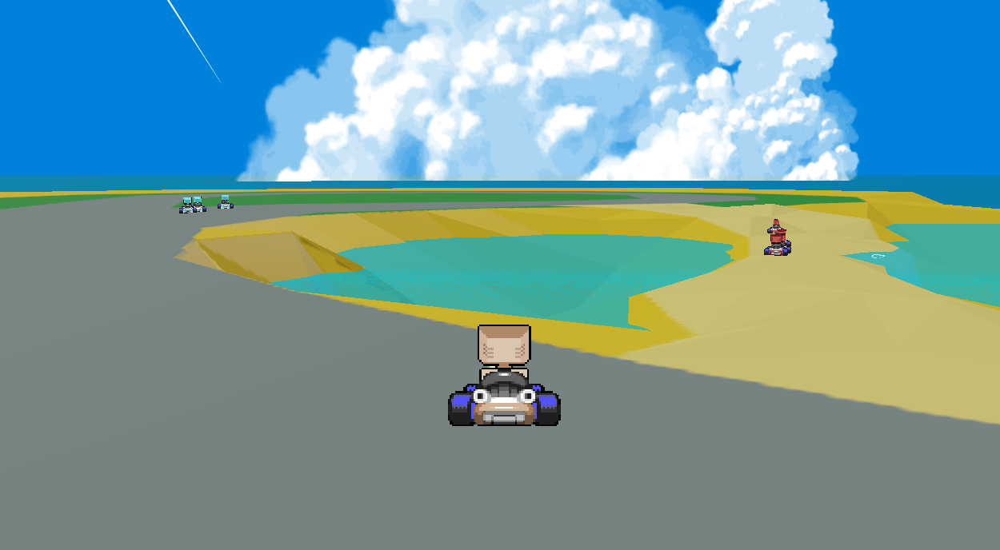
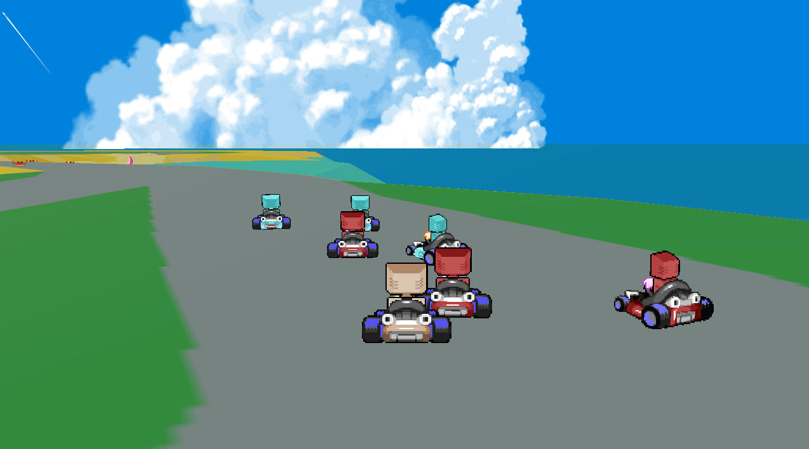

Engineered from the ground up.
I designed and developed a custom engine in C and assembly without external libraries, implementing rendering across Vulkan, DirectX 12, and Metal. The project combines manual memory management, graphics programming, and reinforcement learning in a driving environment.
CAssemblyVulkanDirectX 12MetalReinforcement Learning